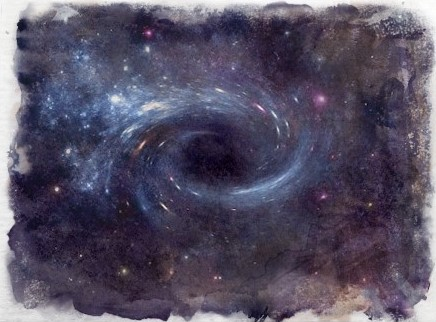

The Abyss
The Abyss is an endless void of nebulae and shattered worlds. It is a place of ruin and destruction save for the aeon, living celestial stars that emerge sporadically dispersed throughout the void, as though seeds on the wind. Serpentine beings of dark energy called the Nu also roam this void searching for and feasting upon the energy of the aeon. Once their hunger is satiated they breed within the husks of these dead stars, only to begin the cycle again across eternity.
The nebulae and broken planetoids that populate the Abyss are all that remain of the aeon that have come before, worlds born in the warmth of their light and nurtured by their energies. Once the Nu pierce the core of an Aeon, the raw power released destroys everything it once gave life to.